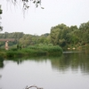

Природные достопримечательности

Сероводородный источник
Более полувека назад, в ходе изыскательных работ из земли забил фонтан высотой более двух метров.
Вода, соленная на вкус, постоянно сохраняет температуру +24 градуса.
Таких источников на территории России всего семь!, Иловлинский сероводородный источник считается шестым.

Природный парк Донской
Донской — природный парк регионального значения, расположенный в Иловлинском районе Волгоградской области.
Отличается большим природным разнообразием, контрастностью и живописностью ландшафтов.
Площадь парка около 62 тыс. га.

Арчединско-Донские пески
Арчединско-Донские пески - государственный ботанический памятник природы, расположенный на территории Серафимовичского и Фроловского районов.
Место уникальное в своем роде. Именно здесь пролегала граница последнего обледенения. Таявшие ледники и намыли эти горы песка.
Арчединско-Донские пески представляют собой маленький кусочек пустыни (а не полупустыни, как принято считать), площадью около 200 тысяч гектаров.

Река Медведица
Река Медведица — живописная малая река Волгоградской области. Протекает в том числе по территории Михайловского
района Волгоградской области и пересекат трассу М6 Каспий Москва-Волгоград.
На берегах этой живописной реки можно приятно отдохнуть во время путешествий на машине по Волгоградской области.